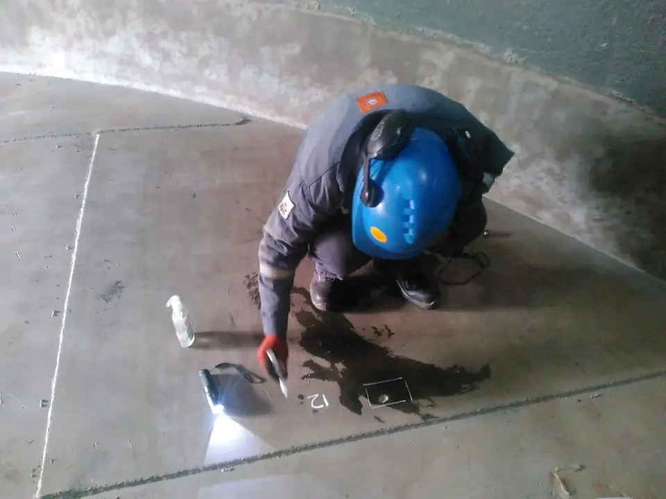

Inspecciones técnicas y ensayos no destructivos
Cuatro líneas de servicio para evaluar la integridad de tanques, recipientes y equipos de la industria.
Inspecciones técnicas
Res. 277/25 SE · API 653Verificación del estado de integridad de tanques aéreos de almacenamiento de hidrocarburos según la Res. 277/25 y la norma API 653. Aplicamos distintos ensayos no destructivos para determinar el estado del activo y garantizar su condición técnica según la normativa.

Ensayos no destructivos
Herramientas de diagnóstico para estudiar y evaluar materiales, equipos y soldaduras sin producir daños irreversibles, detectar discontinuidades y actuar sobre ellas. Prevención para asegurar calidad, seguridad y mantenimiento.

Cámara acústica
Utilizamos un equipo de última tecnología que permite localizar, dimensionar y visualizar fugas audibles y ultrasónicas en tiempo real, inclusive dentro de ambientes ruidosos como instalaciones industriales.

Emisión acústica
Personal NIVEL III y NIVEL II · ISO 9712Método no destructivo que detecta y monitorea, en tiempo real, las ondas de presión elástica liberadas por el material cuando está sometido a un esfuerzo. Mediante una red de sensores, un solo ensayo cubre un recipiente entero, evitando abrir o vaciar los equipos.

¿No sabe qué servicio necesita?
Cuéntenos su caso y le indicamos el alcance adecuado.